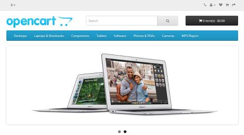

Esta lección es una introducción a la instalación de aplicaciones mediante Docker, utilizando las imágenes proporcionadas por Bitnami. Como es la primera vez que trato en clase el uso de Docker, esta lección tiene un carácter "experimental". Los dos primeros ejercicios están planteados como actividades guiadas, por lo que no se ofrece una página de soluciones. Se pueden consultar las soluciones de los demás ejercicios de Docker (1), aunque se recomienda intentar realizarlos primero sin recurrir a estas soluciones.
En este ejercicio instalaremos Docker en una máquina virtual de Ubuntu 16.04.3 LTS Server ejecutada en VirtualBox.
Estas instrucciones se han extraido de la documentación oficial de Docker Install Docker on Ubuntu
Actualmente (enero de 2018), la última versión disponible de Ubuntu LTS Server es Ubuntu 16.04.3 (03/08/17). Página de descarga
Para los ejercicios de esta página un disco duro virtual de 8 GB es suficiente, pero para poder instalar más aplicaciones se necesitaría un disco mayor, por ejemplo de 16 GB.
Compruebe que en la configuración de red de la máquina virtual está conectado a Adaptador puente. Si está conectado a otro tipo de adaptador (probablemente NAT), apague la máquina virtual, cambie a Adaptador puente y reinicie la máquina virtual.
sudo apt update
sudo apt upgrade
Arranque la máquina virtual y ejecute los comandos siguientes en un terminal:
sudo apt update
sudo apt install apt-transport-https ca-certificates curl software-properties-common
curl -fsSL https://download.docker.com/linux/ubuntu/gpg | sudo apt-key add -
sudo apt-key fingerprint 0EBFCD88
El resultado debe ser:
pub 4096R/0EBFCD88 2017-02-22
Key fingerprint = 9DC8 5822 9FC7 DD38 854A E2D8 8D81 803C 0EBF CD88
uid Docker Release (CE deb) <docker@docker.com>
sub 4096R/F273FCD8 2017-02-22
sudo add-apt-repository \
"deb [arch=amd64] https://download.docker.com/linux/ubuntu \
$(lsb_release -cs) \
stable"
sudo apt updateapt policy docker-ceEn la pantalla debe mostrarse el repositorio de la versión de Ubuntu indicada (en el ejemplo se muestra xenial, es decir, Ubuntu 16.04):
docker-ce:
Instalados: (ninguno)
Candidato: 17.12.0~ce-0~ubuntu
Tabla de versión:
17.12.0~ce-0~ubuntu 500
500 https://download.docker.com/linux/ubuntu xenial/stable amd64 Packages
...
En la máquina virtual, ejecute los comandos siguientes en un terminal:
sudo apt updatesudo apt install docker-cesudo service docker startsudo docker run hello-worldSe descargará e instalará la aplicación y se mostrará el mensaje:
Hello from Docker!
This message shows that your installation appears to be working correctly.
...
En este ejercicio instalaremos OpenCart en un contenedor Docker.
Los repositorios de las imágenes de Bitnami son Bitnami MariaDB OpenCart, Bitnami Docker OpenCart.
sudo docker network create opencart-networksudo docker run -d --name=mariadb -e ALLOW_EMPTY_PASSWORD=yes --net=opencart-network bitnami/mariadbNota: El nombre mariadb se puede cambiar, pero tenga en cuenta que las imágenes de bitnami suponen de forma predeterminada que ese es el nombre del contenedor de la base de datos. Si utiliza otro nombre de contenedor, deberá añadir la opción de configuración correspondiente al crear el contenedor de la aplicación.
Nota: Algunas de las variables disponibles (y su valores predeterminados entre corchetes) son MARIADB_EXTRA_FLAGS, MARIADB_ROOT_USER [root], MARIADB_ROOT_PASSWORD [], ALLOW_EMPTY_PASSWORD, MARIADB_USER, MARIADB_PASSWORD, MARIADB_DATABASE.
sudo docker run -d --name=opencart -e OPENCART_HOST=AAA.BBB.CCC.DDD -p 80:80 -p 443:443 --net=opencart-network bitnami/opencartNota: Las variables disponibles (y su valores predeterminados entre corchetes) son OPENCART_USERNAME [user], OPENCART_PASSWORD [bitnami1], OPENCART_EMAIL [user@example.com], OPENCART_HOST, MARIADB_PASSWORD, MARIADB_HOST [mariadb], MARIADB_PORT_NUMBER [3306].

El usuario administrador predeterminado de OpenCart es user con contraseña bitnami1:
En este ejercicio se trabaja con el OpenCart instalado en el ejercicio anterior.
Puede consultar la Docker Cheat Sheet para obtener información sobre los comandos básicos de Docker.
Para ver los contenedores existentes (en marcha o detenidos):
sudo docker ps -aPara detener un contenedor:
sudo docker stop CONTENEDORPara poner en marcha un contenedor detenido:
sudo docker start CONTENEDORPara borrar un contenedor (debe estar detenido primero):
sudo docker rm CONTENEDORNota: La base de datos no se ha borrado, así que se podría cambiar el usuario y contraseña de la tienda para usar la antigua base de datos y recuperar la tienda antigua.
Si cambiara la IP de la máquina virtual, OpenCart dejaría de funcionar correctamente porque en los archivos de configuración de OpenCart se guarda la URL de OpenCart. En clase esto ocurre de vez en cuando, ya que el router de aula está continuamente asignando direcciones.
La forma más fácil es copiar los dos archivos de configuración de OpenCart del contenedor a la máquina virtual, modificarlos y volverlos a copiar a la imagen
sudo docker cp CONTENEDOR:ORIGEN DESTINOPara averiguar el directorio del sistema de ficheros del contenedor en el que se encuentra opencart, puede abrir una sesión en la imagen y después buscarlo:
sudo docker exec -it CONTENEDOR /bin/bashLos ficheros de configuración están en /bitnami/opencart/config.php y /bitnami/opencart/admin/config.php. Los ficheros se pueden copiar en cualquier carpeta fuera del contenedor. Por ejemplo,
sudo docker cp opencart:/bitnami/opencart/config.php /tmp/config.phpEn este ejercicio se pide instalar phpMyAdmin en un contenedor Docker.
El repositorio de las imágenes de Bitnami es Bitnami phpMyAdmin OpenCart.
En este ejercicio se pide instalar la misma aplicación dos veces (por ejemplo, dos instalaciones de WordPress), pero que utilicen el mismo contenedor con la base de datos, con el objetivo de hacerlos accesibles mediante las URLs http://AAA.BBB.CCC.DDD:8802 y http://AAA.BBB.CCC.DDD:8803.